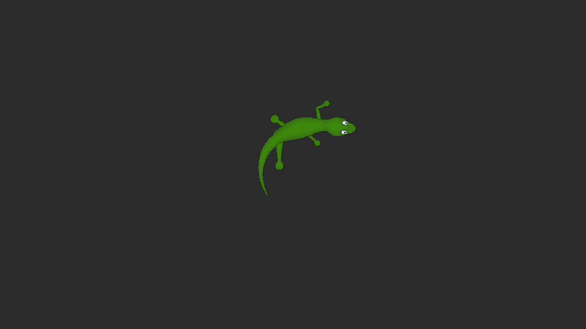

Hi, I'm Reuben.
I'm a game developer, animator, and creative with a passion for building interactive systems and experiences.
I hold an Associate Degree in Game Design and a Diploma of Animation from SAE Institute, covering the full pipeline. My main passions include designing game systems in Unity with a particular interest in procedural generation. I have a large amount of experience working in teams, and get along well with a large variety of people.
Growing up in Byron Bay, NSW I believe I have developed a healthy balance between creativity, socialising, and working hard on technical projects. Outside of game dev I've spent upwards of two years solo travelling through Europe and Asia, which has helped me develop a number of social and problem solving skills that I am very grateful for.

Real-time procedural island generator built in Unity. Uses noise functions and custom mesh generation to produce unique, explorable terrain on every run.
View Project →
2D procedural animation system built in Unity. The lizard's limbs and body adapt dynamically to movement for natural, fluid creature motion.
View Project →


Let's make something great.
Open to freelance work, collaborations, and full-time game dev roles. Drop me a line.
Contact Me